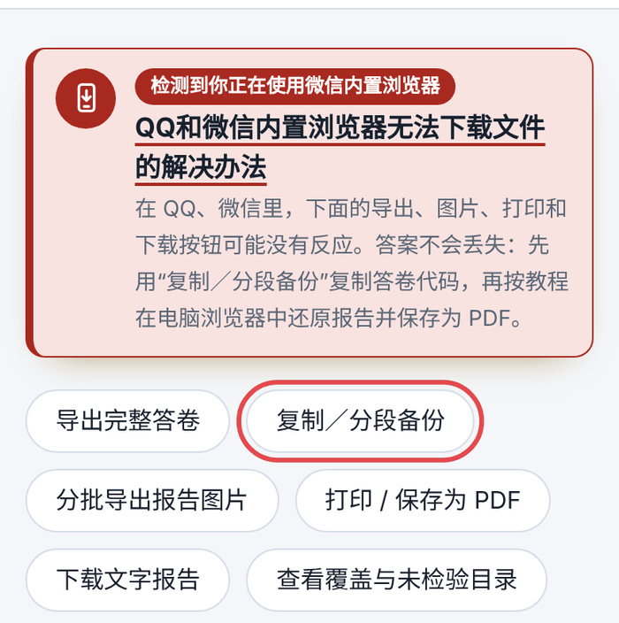
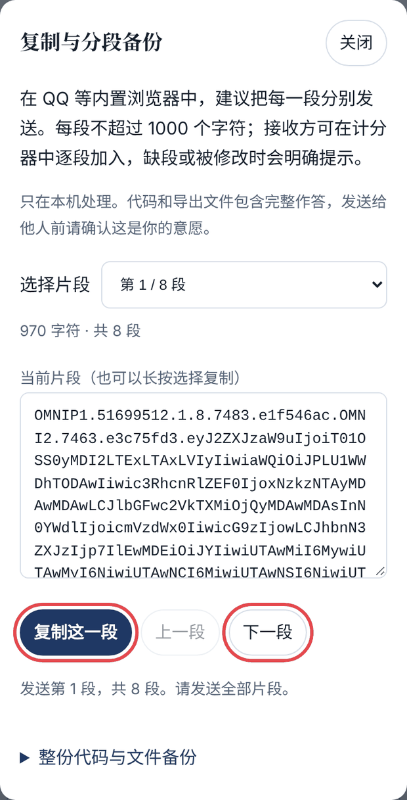
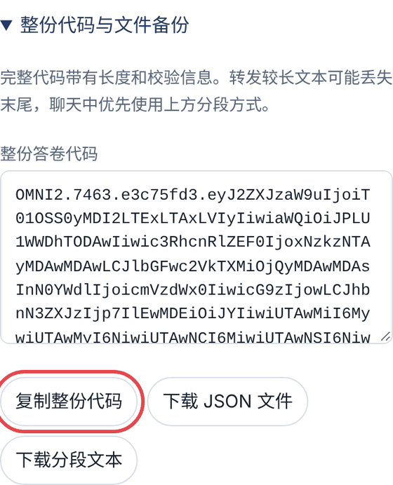
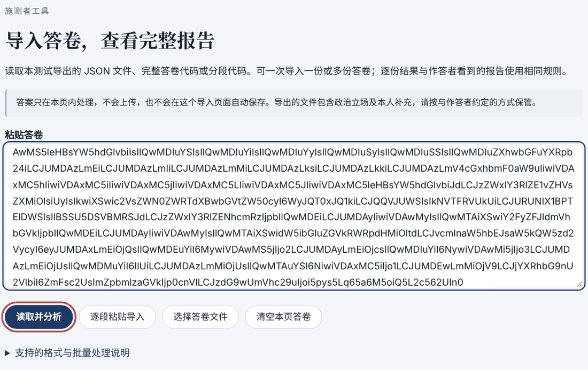
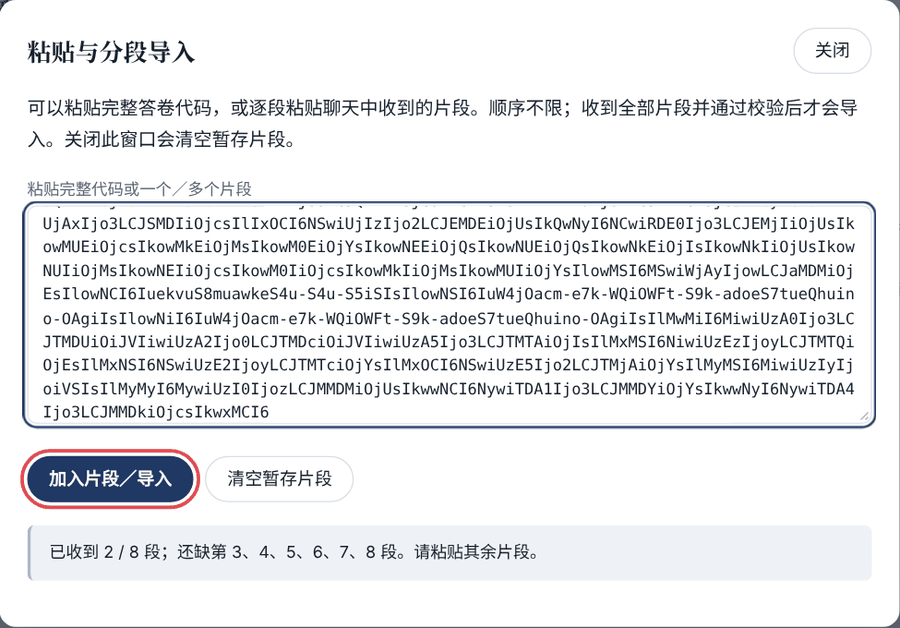
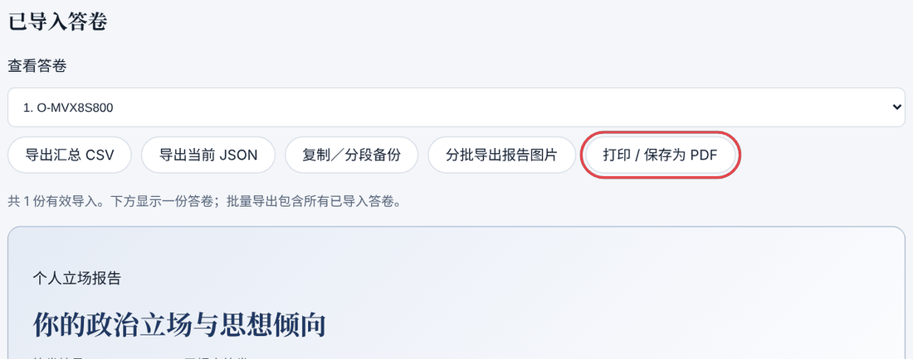
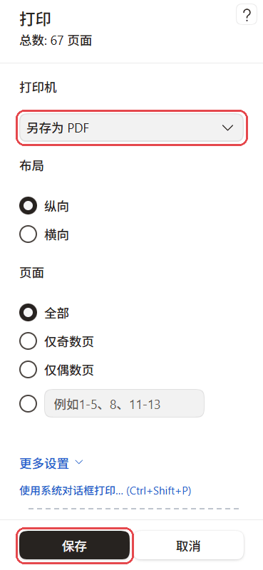

使用帮助
QQ和微信内置浏览器无法下载文件的解决办法
在 QQ、微信里直接点开测试链接时，网页是在聊天软件自带的“内置浏览器”里运行的。它们通常会拦截文件下载和打印，所以报告页的导出完整答卷分批导出报告图片打印 / 保存为 PDF下载文字报告点了可能没有反应。
你的答案没有丢，也不用重新答题。答案仍保存在你作答的那个内置浏览器里。按下面的步骤，把“答卷代码”转到电脑上，在 Edge 或 Chrome 里还原完整报告，再保存为 PDF。整个过程只在你自己的设备上进行，代码不会上传到任何服务器。
四步完成
不要只把测试网址复制到别的浏览器。答案只存在当初作答的那个浏览器里，换一个浏览器打开同一网址，看到的是一份空白的新答卷。一定要先复制答卷代码。
需要准备
- 一台装有 Microsoft Edge 或 Google Chrome 的电脑（Windows 自带 Edge）。
- 能把手机上的文字发到电脑上的方法：电脑上登录微信或 QQ 最方便，也可以用邮箱或其他聊天工具。
- 没有电脑也能完成，见后面的“没有电脑怎么办”。
1在 QQ／微信里复制答卷代码
- 在 QQ／微信里打开你作答时用的那个测试链接，进入个人立场报告页面。已经关掉也没关系：重新点开原来的链接，首页会显示查看我的报告。
- 点报告页上方的复制／分段备份（首页的同一按钮也可以），会弹出“复制与分段备份”窗口。

推荐：分段复制，逐段发送
代码很长，聊天软件转发长文字时可能把末尾截掉，所以窗口默认把代码切成若干段（每段不超过 1000 个字符），每段都带编号和校验。
- 窗口显示“第 1 / N 段”。点复制这一段，切到聊天窗口粘贴并发送（第 2 步会说明发给谁）。
- 回到测试页面，点下一段，再复制、发送。重复到最后一段。
- 每一段都以
OMNIP1.开头。顺序不要紧，但一段都不能少；漏了哪段，导入时会明确告诉你缺第几段。

也可以：复制整份代码
展开窗口下方的“整份代码与文件备份”，点复制整份代码。整份代码以 OMNI2. 开头（较早的答卷是 OMNI1.），通常有几千个字符。发到电脑后如果提示读取失败，多半是被截断了，请改用分段。

提示“浏览器限制了自动复制”？这时代码已经被选中，长按选中的文字，在菜单里点“复制”即可。
2把代码发到电脑上
- 微信：在聊天列表里找到“文件传输助手”（找不到时，在微信顶部搜索“文件传输助手”），把复制的代码逐段粘贴发送。然后在电脑上登录微信，打开“文件传输助手”，就能看到这些消息。
- QQ：在手机 QQ 的“联系人 → 设备”里打开“我的电脑”，把代码逐段发送。电脑上登录 QQ 后，在对应的“我的手机”会话里查看。不同版本的名称可能略有差别。
- 其他方式：发到自己的邮箱、网盘笔记或其他聊天工具都可以，只要电脑上能复制到完整的文字。
顺手把计分器网址也发过去，第 3 步要用。
3在电脑的独立浏览器中打开计分器
- 在电脑上打开 Microsoft Edge 或 Google Chrome。
- 把计分器网址粘贴到浏览器顶部的地址栏，按回车：
https://saigyouji-yukari.github.io/ideology-survey/omni-admin.html - 页面标题是“导入答卷，查看完整报告”，说明打开对了。
不要在电脑版微信／QQ 里直接点这个链接。那样打开的仍是它们的内置浏览器，同样无法保存。请复制网址，粘贴到 Edge 或 Chrome 的地址栏。
正在电脑上的 Edge／Chrome 里阅读本页？可以直接在新标签页打开计分器。
4粘贴代码，导入答卷
先在电脑版微信／QQ 里复制收到的代码，再按你手上的代码类型操作。
如果是整份代码（以 OMNI2. 或 OMNI1. 开头）
- 点一下计分器的“粘贴答卷”输入框，按 Ctrl + V（Mac 为 ⌘ + V）粘贴。
- 点读取并分析。

如果所有分段都已收齐，也可以把它们一起粘贴到这个输入框（每段一行），同样点“读取并分析”。
如果是分段代码（以 OMNIP1. 开头）
- 点逐段粘贴导入，弹出“粘贴与分段导入”窗口。
- 把一段（或几段，每段一行）粘贴到窗口的输入框，点加入片段／导入。
- 窗口下方会显示“已收到 2 / 8 段；还缺第 3、4……段”。继续复制下一段、粘贴、点“加入片段／导入”。顺序不限，同一段重复加入也没关系。
- 收齐全部片段并通过校验后，会自动导入并关闭窗口。

导入成功后，导入按钮下方会显示“已导入 1 份答卷。”或“已收齐全部片段并通过校验，导入 1 份答卷。”，页面下方出现你的完整报告。
5打印 / 保存为 PDF
- 导入成功后，“已导入答卷”一栏会出现几个按钮。点打印 / 保存为 PDF。它会先展开报告里所有折叠的内容，再打开打印窗口。

- 在打印窗口中选择打印机：
- Edge：“打印机”选“另存为 PDF”。
- Chrome：“目标打印机”选“另存为 PDF”。
- “布局”选“纵向”，“页面”选“全部”。
- 点“保存”，选择保存位置和文件名。

- 完整报告包括综合分析、逐题记录和全部图表，几十页（常见为 70～80 页）是正常的。
- 图表颜色会直接打印，不需要另外勾选“背景图形”。
- 得到的 PDF 可以发回手机保存，或发给你信任的人。
没有电脑怎么办
可以用手机自带的浏览器代替电脑，步骤相同：
- 在 QQ／微信里按第 1 步复制代码（分段时，可先逐段发到“文件传输助手”或“我的电脑”暂存）。
- 点上面的复制网址，打开手机自带的浏览器（如 Safari、Chrome，或华为、小米等手机的系统浏览器），把网址粘贴到地址栏打开计分器。
- 按第 4 步粘贴代码导入，再点打印 / 保存为 PDF：
- 安卓手机：打印预览里把打印机选为“另存为 PDF”或“保存为 PDF”，再点下载或保存图标。
- iPhone：打开打印选项后，用两根手指在预览页上张开放大，会进入 PDF 预览；再点“分享”，选“存储到‘文件’”。
在 QQ／微信右上角的“…”菜单里选“在浏览器打开”，只是用别的浏览器打开同一网址，答案不会跟过去，仍然需要按上面的方法导入代码。
只想保存图片版报告
报告页的分批导出报告图片会在页面里直接生成报告图片，每批最多六张。在 QQ／微信里，图片下面的下载按钮可能无效，可以试着长按图片，选择“保存图片”（能否保存取决于手机和软件版本）。图片只能阅读，不能再导入计分器，所以仍建议保留一份答卷代码。
常见问题
导入时提示“还缺第几段”
说明有片段没发全或没粘贴。回到手机上的“复制与分段备份”窗口，在“选择片段”里选中缺少的段号，复制并发送，再在电脑上继续“加入片段／导入”。
提示无法读取、格式不对
多半是代码不完整或混入了别的文字。整份代码以 OMNI2. 或 OMNI1. 开头，片段以 OMNIP1. 开头；复制时不要漏掉开头或末尾。整份代码在聊天中容易被截断，改用分段最稳妥。
电脑上找不到“打印 / 保存为 PDF”
这个按钮在答卷导入成功后才会出现，位于“已导入答卷”一栏。请先完成第 4 步。
点了打印没有反应
请确认用的是 Edge 或 Chrome，而不是电脑版微信／QQ 里打开的窗口。请用页面上的“打印 / 保存为 PDF”按钮，它会先展开全部折叠内容，保存的 PDF 才完整。
还没答完，能换到电脑上继续吗？
可以。作答页和首页同样有“复制／分段备份”。在电脑浏览器打开测评首页，展开“本机记录与答卷导入”，点“粘贴／分段导入”，把代码导入后即可接着作答。
代码会泄露我的答案吗？
代码里就是你的全部作答，导入只在你打开的浏览器里进行，不会上传。请只发给你自己或你信任的施测者。
以后还想再看报告
保留好答卷代码或保存的 PDF。以后随时可以在计分器里重新导入代码，得到同样的报告。
把本教程发到电脑上
想在电脑上对照操作，可以复制本页网址一并发送。
以后作答：最好直接用电脑或手机自带的浏览器打开测试，下载、打印都可以在报告页直接完成。